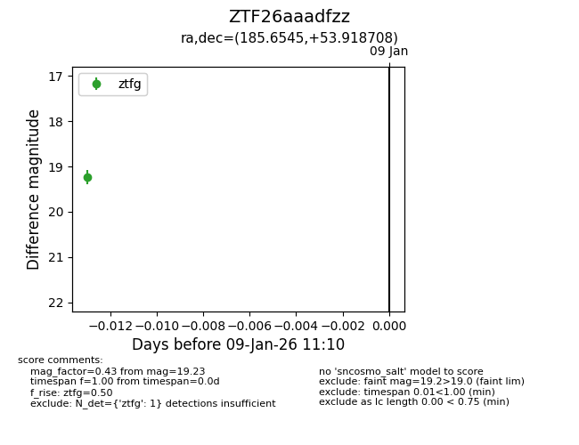
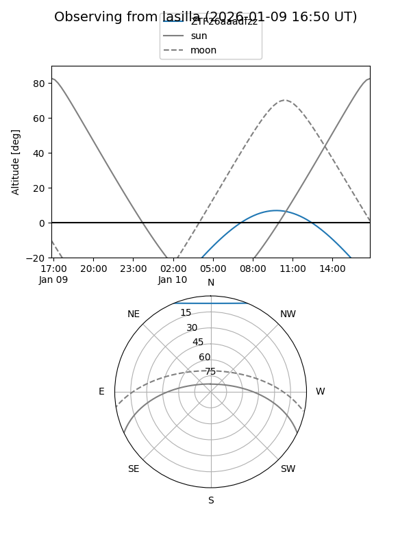
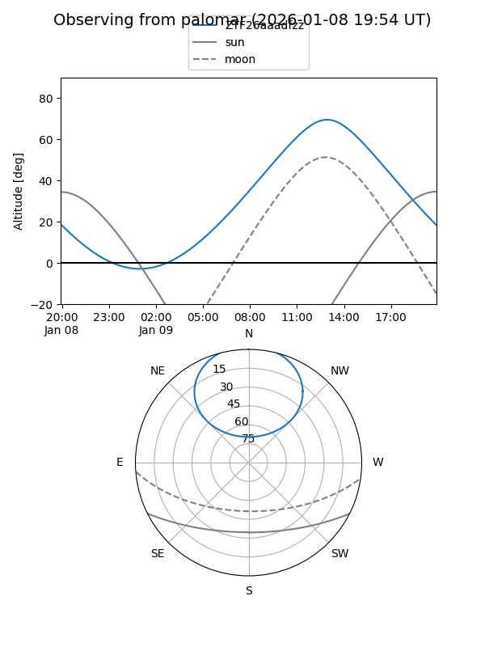

ZTF26aaadfzz
Target ZTF26aaadfzz at 2026-01-09 11:10
Aliases and brokers:
FINK:
Lasair:
ALeRCE:
alt names
ZTF26aaadfzz (ztf,fink_ztf)
Coordinates:
equatorial (ra, dec) = 185.6545,+53.91871
equatorial (HMS+DMS) = 12:22:37.08,+53:55:07.35
galactic (l, b) = (132.1958,+62.68813)
Flags:
Photometry:
last ztfg=19.23
1 ztfg detections
Lightcurve

Visibility


Additional plots